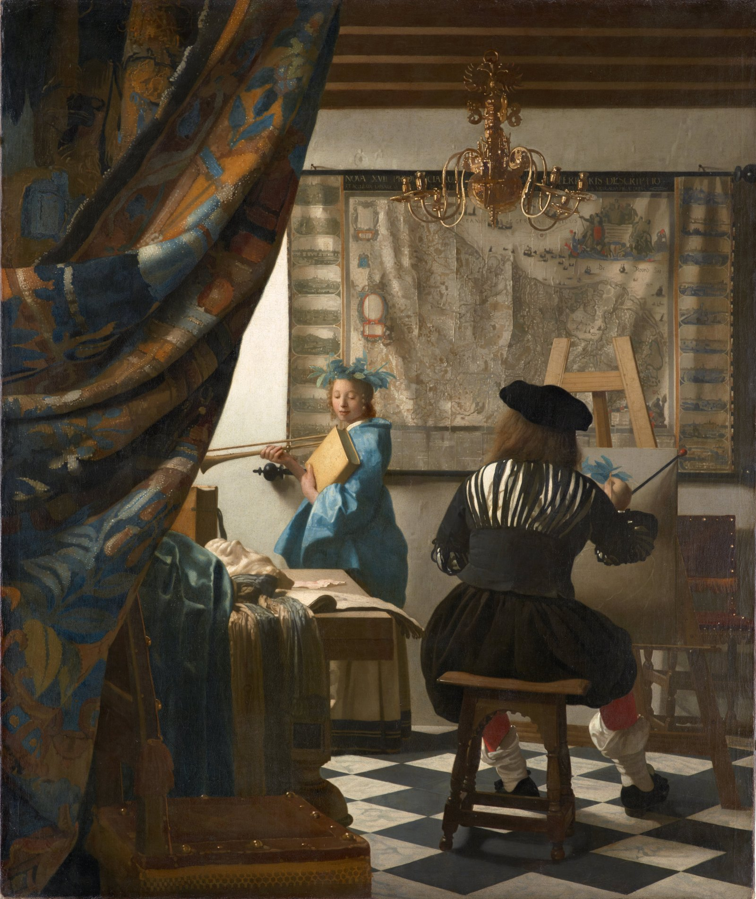

绘画艺术 The Art of Painting
维米尔 · 约1666/68年 · 维也纳艺术史博物馆
Johannes Vermeer · About 1666/68 · Kunsthistorisches Museum, Vienna
图片：Wikimedia Commons，公有领域 / Image: Wikimedia Commons, public domain

发现 · Discover
帘子 The curtain
一块厚重的挂毯帘子被拉到一边，好像邀请我们走进这个房间。
A heavy tapestry curtain is drawn aside, as if inviting us into the room.
画家 The painter
画家背对着我们，坐在画架前作画。维米尔把一个工作室里的日常场景，变成了“绘画艺术”的寓言。
The painter sits at his easel with his back to us. Vermeer turned an everyday studio scene into an allegory of the art of painting.
克利俄 Clio
模特装扮成历史女神克利俄。她启发画家，并宣告绘画的荣耀，把它写进历史之书。
The model poses as Clio, Muse of history, who inspires the painter and proclaims the glory of painting, recording it in the book of history.
画架上的画 On the easel
画家刚开始画，画布上只画了一点点。
The painter has only just begun; there is very little on the canvas so far.
桌上的东西 On the table
桌上有雕塑模型和素描本。它们和画架上的画一起，表现了各门艺术的统一。
On the table are a sculptor's model and a sketchbook. Together with the painting on the easel, they reflect the unity of the arts.
地图 The map
墙上的地图，画的是南北分裂之前的尼德兰十七省，指向一片一直因绘画而闻名的土地。
The map shows the 17 provinces of the Netherlands before they were divided into north and south, a land that had always owed its fame to painting.
地图上的签名 The signature
维米尔把自己的名字签在了地图下方的边框上：“I Ver-Meer”。
Vermeer signed his name on the lower border of the map: "I Ver-Meer".
故事 · The story
ACT I 第一幕 · 画家的工作室 The painter's studio
大约1666到1668年，维米尔画下了一位在工作室里作画的画家。他让模特装扮成历史女神，把这个日常场景，变成了一首献给绘画的寓言。
Around 1666–68, Vermeer painted an artist at work in his studio. Dressing the model as the Muse of history, he turned this everyday scene into an allegory of the art of painting.
约1666/68年 · 维也纳艺术史博物馆 / About 1666/68 · Kunsthistorisches Museum, Vienna
ACT II 第二幕 · 留在家里 Kept at home
维米尔去世后，这幅画留在他的遗孀卡塔琳娜手里。1676年，她把画转给了自己的母亲。第二年，它在代尔夫特被拍卖。
After Vermeer's death, the painting remained with his widow, Catharina. In 1676 she passed it to her mother, and the following year it was auctioned in Delft.
约1666/68年 · 维也纳艺术史博物馆 / About 1666/68 · Kunsthistorisches Museum, Vienna
ACT III 第三幕 · 漫长的旅程 A long journey
它后来来到维也纳，1813年起属于切尔宁伯爵。1940年，它被希特勒占有；战后，1946年移交给艺术史博物馆，1958年正式成为馆藏。今天，它挂在第十二展厅。
It later came to Vienna, and from 1813 belonged to Count Czernin. In 1940 it was acquired by Adolf Hitler. After the war, in 1946, it was handed over to the Kunsthistorisches Museum, and formally joined the collection in 1958. Today it hangs in Room XII.
约1666/68年 · 维也纳艺术史博物馆 / About 1666/68 · Kunsthistorisches Museum, Vienna
画家背对着我们，让我们看他作画。 The painter turns his back to us, and lets us watch him paint.
作品档案 · Artwork record
| 画家（生卒年） · Artist (dates) | 约翰内斯·维米尔（1632–1675） / Johannes Vermeer (1632–1675) |
|---|---|
| 画名 · Title | 绘画艺术 / The Art of Painting |
| 年份 · Date | 约1666/68年 / About 1666/68 |
| 材质 · Medium | 布面油画 / Oil on canvas |
| 尺寸 · Dimensions | 120 × 100 cm |
| 收藏地 · Collection | 维也纳艺术史博物馆，绘画馆第十二展厅 / Kunsthistorisches Museum, Vienna, Picture Gallery, Room XII |
关于画家 · About the artist
约翰内斯·维米尔（1632–1675），荷兰画家，一生都在代尔夫特生活和创作。他留下的画作只有约35幅，以描绘室内的光线著称。
Johannes Vermeer (1632–1675) was a Dutch painter who lived and worked in Delft all his life. Only about 35 of his paintings survive, famous for their rendering of light in quiet interiors.
更多维米尔的画 · More by Johannes Vermeer